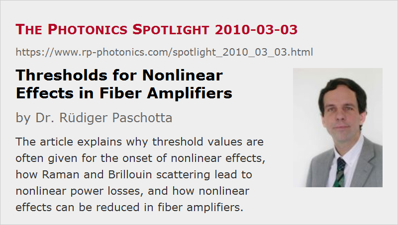

Thresholds for Nonlinear Effects in Fiber Amplifiers
Posted on 2010-03-03 as a part of the Photonics Spotlight (available as e-mail newsletter!)
Permanent link: https://www.rp-photonics.com/spotlight_2010_03_03.html
Author: Dr. Rüdiger Paschotta, RP Photonics Consulting GmbH
Abstract: The article explains why threshold values are often given for the onset of nonlinear effects, how Raman and Brillouin scattering lead to nonlinear power losses, and how nonlinear effects can be reduced in fiber amplifiers.
Ref.: encyclopedia articles on nonlinearities, Brillouin scattering, Raman scattering, fiber amplifiers, laser threshold

Comparing with bulk lasers, fiber lasers and fiber amplifiers exhibit a much higher tendency for unwanted nonlinear effects, because they typically use a much longer solid medium, and this with a rather small effective mode area. Frequently, one calculates a “threshold” for the onset of such effects, even though they normally do not exhibit a threshold which is as well-defined as a laser threshold. It is instructive to think a little more on this.
Unwanted Power Extraction by Stimulated Raman Scattering
Stimulated Raman scattering (SRS) in a fiber amplifier generates some amount of Raman gain in the region of somewhat longer wavelengths. For simplicity, let us assume that these wavelengths are clearly separated from the spectral region of the amplified signal light (which is sometimes not the case, for example in pulse compression experiments). Although there is no input signal in that longer-wavelength region with nonlinear gain, some significant power can be extracted here. In a semiclassical model, this can be explained as follows: even with no classical input signal, there are vacuum fluctuations (vacuum noise) entering the device, which can be amplified to macroscopic power levels. This can occur in two directions: co-propagating with the signal and counter-propagating. If the Raman gain gets too high (for example, well above 40 dB), much of the original signal power may be transferred into this longer-wavelength region, and the amplifier performance is degraded severely.
Such unwanted power extraction does not really set in at a well-defined threshold power. However, the extracted power rises exponentially. Let us assume that at some signal power level we get only 1% of the power removed by SRS, and that the SRS gain is 40 dB here. If we now increase the signal power level by only 10%, the extracted power rises by 4 dB, i.e., to ≈2.3% of the signal power. So we have something one may call a “soft threshold” in terms of the allowable signal power. For amplification of pulses, what counts is of course the peak power.
Similar Effects from Stimulated Brillouin Scattering
With stimulated Brillouin scattering, similar effects can occur, but with some important differences:
- The gain occurs only in backward direction. (Only in relatively exotic situations, some small level of forward Brillouin scattering can be observed.)
- The gain bandwidth is much smaller – of the order of 50 MHz, to be compared with hundreds of GHz for Raman scattering. Therefore, significant power extraction can occur only once the Brillouin gain gets to the order of 90 dB.
- If the optical bandwidth of the signal exceeds the Brillouin gain bandwidth, the Brillouin gain spectrum is “smeared” out, so that the peak gain is reduced and the effective Brillouin threshold becomes higher accordingly. For that reason, stimulated Raman scattering is often the dominating problem, despite the smaller intrinsic nonlinear gain.
Fighting Against Nonlinearities
Reducing nonlinear effects is often a central issue in the design of active fiber devices, in particular of fiber amplifiers for short pulse amplification. A good thing is to increase the effective mode area of the fiber, but there are limits to that, assuming that you need transverse single-mode performance for high beam quality. Making devices shorter by using higher doping concentrations may also be useful, but there are limits to the acceptable doping concentration and also to the heat load per unit length. On the materials side, there is not much one can do: silica fibers already have a fairly low nonlinearity, and one may only avoid the excessive use of certain dopants in the fiber core. Sometimes, one needs to increase the signal bandwidth in order to avoid problems with Brillouin scattering. Another approach is to broaden the Brillouin gain spectrum via longitudinal or transverse variations of the Brillouin frequency shift. That may be worth a Spotlight article at some later time.
This article is a posting of the Photonics Spotlight, authored by Dr. Rüdiger Paschotta. You may link to this page and cite it, because its location is permanent. See also the RP Photonics Encyclopedia.
Note that you can also receive the articles in the form of a newsletter or with an RSS feed.
Questions and Comments from Users
Here you can submit questions and comments. As far as they get accepted by the author, they will appear above this paragraph together with the author’s answer. The author will decide on acceptance based on certain criteria. Essentially, the issue must be of sufficiently broad interest.
Please do not enter personal data here; we would otherwise delete it soon. (See also our privacy declaration.) If you wish to receive personal feedback or consultancy from the author, please contact him e.g. via e-mail.
By submitting the information, you give your consent to the potential publication of your inputs on our website according to our rules. (If you later retract your consent, we will delete those inputs.) As your inputs are first reviewed by the author, they may be published with some delay.
|  |
If you like this page, please share the link with your friends and colleagues, e.g. via social media:
These sharing buttons are implemented in a privacy-friendly way!